What is Cable Modeler?
The OneSpace Designer Cable Modeler is a tool to simplify the process of design and routing of "cable" type assemblies. These "cables" could be representations of coax cables, pipes, waveguides, ribbon cables, wires, HVAC ducting, etc. While similar cables are commonly used in RF and microwave instruments Cable Modeler is not limited to just those applications. Cable Modeler can be used anywhere there is need to bend and route a part that has a constant cross section shape. In addition, this tool can produce data, which allows direct prototyping of the cable assembly. Cable Modeler is an add-on module to OneSpace Designer and does require a license for usage. The presentation of all pertinent data is in an easy-to-use tabular format. A cable is created by choosing a size, picking the cable terminators from a menu and selecting the bend points from a OneSpace Designer workplane or off an existing 3D wireframe, surface or solid model. Cable Advisor will show the designer the total length of the cable, build it and automatically add the appropriate connectors from its library.
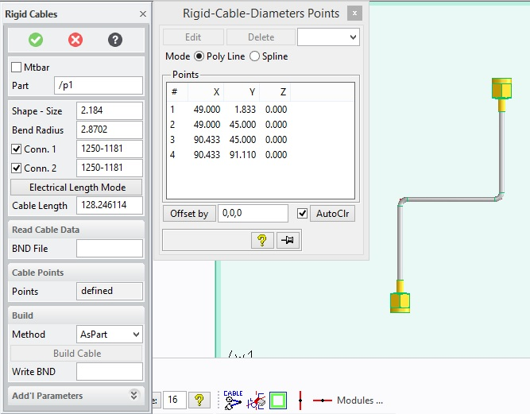
User Interface
| 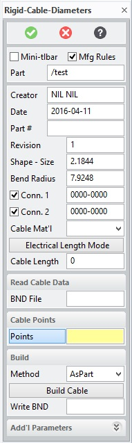 | 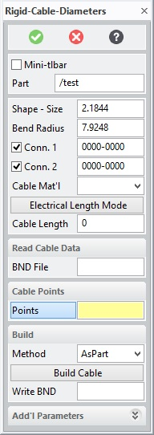 |
| Menu shown with all cable parameters | Menu shown with minimum parameters set |
This document shows all options on the menus. Menus are configurable by the system administrator. Your system may not show all menu choices shown here.
Mtbar
Enable
or disable the Mini-toolbar mode. When the dialog is re-invoked, the last
used Mtbar mode is reused.
Mfg Rules
Enable
or disable manufacturing rule checking when creating, editing or deleting
points. The rules checked are
controlled by the administrator setup.
If enabled, all rules are checked at each operation on the cable. If disabled, all rule checking is
disabled until re-enabled. Once
re-enabled, the path is checked for any rule violations, which are then
displayed to the user. The setting
of Mfg Rules is only active during the life of the
command. Each time the command is
started, the default value is set to the global value set by the administrator.
Part
This field shows and allows the user to set the name of the cable part that will be constructed. Enter a new part name or select an empty part to create a new cable. If you enter or select the name of an existing cable, the command will modify the selected cable part. During modification, if you select a new or empty part, the user will be given the choice to use the current points and setting (i.e. copy the cable) or to clear the data to start a new empty cable.
Creator/Date/Part#/Revision
These optional fields allows the user to attach creator name, date, part number and revision number attribute to the model.
Shape-Size
Calls another menu that allows the user to choose a cable shape and size. The size values can also be entered manually into the data field. See the section "Building Cable" below.
Bend Radius
Calls another menu that allows the user to pick a bend radius. The radius can also be entered manually into the data field.
Conn. 1/Conn. 2
Allows the user to choose connectors for end 1 and end 2 of the cable from a table of predefined connectors. The data fields show the number of the selected connector.
Electrical/Physical Length mode
This button toggles between electrical and physical length mode. The data displayed in the Cable Length data field will represent the physical or electrical length of the cable according to this setting. Electrical length is the actual length of the path between the start and end points. Physical length takes connector parameters tip_dist and ref_plane_offset into consideration to determine the physical cable length without connectors.
Bnd File
Reads cable data in from a BND file. The BND file is a text format that describes the cable. This file could also be read by external applications such as a manufacturing application.
Points
Shows the display table of points for the current cable. When this table is displayed the user can add, edit, insert or delete points.
AsPart/AsAssy Method
With the AsPart method the cable and connectors are combined as one part. With the AsAssy method the cable and connectors are subparts to an assembly.
Write BND
Writes the current cable to a BND format file. The BND file is a text format that describes the cable. This file could be read by external applications such as a manufacturing application.
Additional Parameters
Displays a secondary menu to set these parameters.
Components
Allows for the
definition of components which can be placed on the cable. See Choosing
Components section for further details
Cable Color
Sets the color for the cable.
Conn1/Conn2 Color
Sets the color for each of the connectors. If there are no connectors the first and last straight sections of the cable will use these colors.
Conn1/Conn2 Angle
Sets the rotation angle with respect to the cable for each of the connectors.
Shape Angle
Rotates the initial profile for the cable at the first point about an axis from the first to the second point.
Building a Cable
Choosing a shape and size
This menu allows a user to pick a size for the cable and if the Advanced Option is enabled optional shapes can also be selected. The table will show the shape and the definitions of the size parameters required for building. If the table does not have the desired parameter values the user can type them directly into the menu's datafield.
|
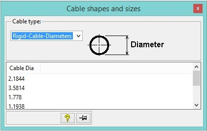 |
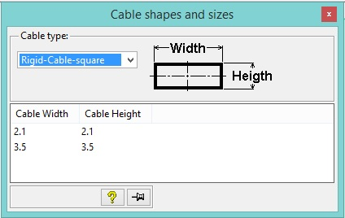 |
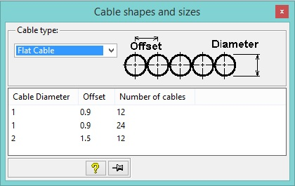 |
NOTES:
Any time during the creation or modifcation of a cable, you can change the
desired shape parameters of the cable. If your cable path contains spline
segments and you choose a shape which does not allow spline paths, the command
will display a warning message and give you the option to convert existing
spline segments to be converted to polyline approximations.
Choosing a Bend Radius
This table allows you to define the default bend radius for the cable. If Allow Multiple Bends is selected a different radius can be used for each bend in the cable by choosing a radius from the table before choosing the second point for the bend or by editing the bend table later. A bend radius can also be entered manually into the data field of the Rigid Cables menu.
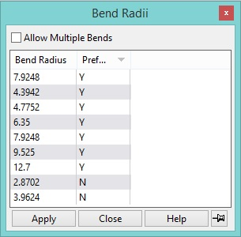
Choosing Connectors
A connector can be chosen from this table for each end of the cable. Connectors displayed in the table will be appropriate for the cable shape and size.
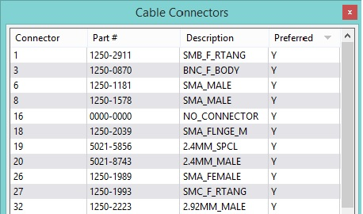
Entering Points
Points that the cable will pass through can be selected by picking points in a workplane, picking points on a 3d model or by typing X,Y,Z values into the input line. As points are defined they will be listed in the Points Table. If the user selects a position on the existing path a point will automatically be inserted into that location and the table will be updated and renumbered. A preview of path for the cable will also be displayed in 3d viewports with the appropriate bend radius shown as well.
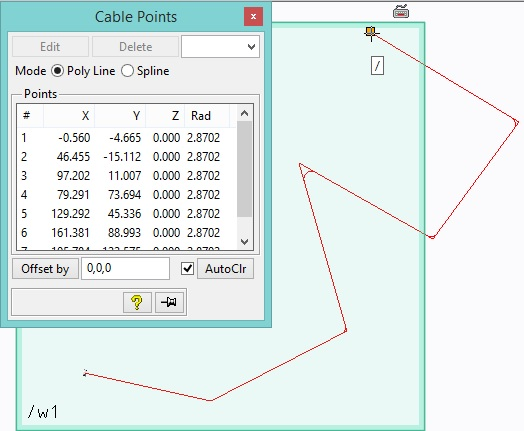
Creating Spline segments
While
entering points, you can toggle between construtcting Polyline segments
(default) or Spline segments. To define a spline segment, select the
Spline option.
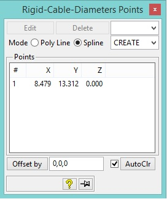 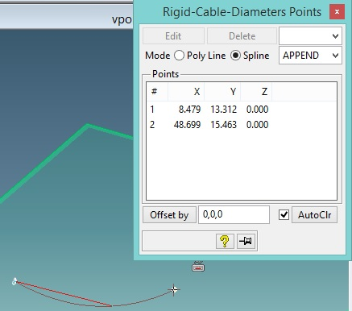
By default, the Spline mode will default to "CREATE" mode. This
indicates that a new spline segment will be started. After selecting a
point, the Spline mode will then change to "APPEND" mode indicating
that the point picked will append a point onto the previous spline segment.
At any time, you may select the "CREATE" mode to begin a new
spline definition. Alternatively, select the Poly Line mode to end the
current spline segment and begin a new linear segment.
Editing Points
Points can be edited both manually and graphically. A point may be selected for editing by selecting a point in the point table and then clicking Edit or by clicking on a point on the path in the 3d viewport. In addition, if enabled, a point coordinate value can be directly edited within the Points table shown above. Simply double click on the desired cell and enter a new value. The cable will be immediately updated with the new coordinate value. When a point is selected (highlighted) for editing the Edit Point menu will be displayed and also with the Advanced Module the 3d Copilot will be displayed. In the Edit Point menu a user can manually change the values for the points X, Y, Z location as well as the bend radius. The bend radius of a point is the radius of the bend from that point to the next point in the path. The 3d Copilot can be used to change a point location graphically. The 3d Copilot has 3 axes. By clicking on an axis a point may be dragged along that axis to a new location. When the drag is completed the Edit Point menu will update to show the new X,Y,Z value. Any face, edge, vertex, workplane, part, assembly can be selected for the Copilot reference for controlling the movement of the edited point. Once done editing, the feedback model will be updated with the new position and the Next button can be selected to edit a different point by entering a value for point #. It is allowed to select/highlight more than one row in the points table. If multiple rows are selected for editing, a default 3D Copilot will be displayed and all selected points will be moved by the specified amount and direction. If desired, the default 3D Copilot can be easily modified by simply selecting on another reference element from which the 3D Copilot will be derived
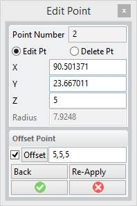
When editing a point, the above dialog is shown displaying the point number being edited along with the current coordinates of the point. You can edit directly any of the X,Y,Z values of the point or use the offset options to move the point a given distance. You can directly enter an offset value into the Offset field, or by clicking the Offset button, the copilot will be displayed allowing you multiple way to specify the offset including by selecting on some reference face/edge for a direction and then entering the distance. Once an offset value has been specified, you can re-apply that offset value multiple times. Use the Back button to undo the last offset.
If Multi-radii mode has been enabled, you can also edit the radius for this specific point. Lastly, you can also delete the given point instead of editing it. Use the “Delete Pt” option. You can edit or delete another point without closing the dialog by entering a new point number. This will discard any current changes you have made and move the editing to specified point. To select the new point to edit, click/select on the point in the path. The point number will be updated once you have selected an existing point to edit.
Editing Spline Points
In
addition to editing polyline points, it is also possible to edit the
interpolations points of any spline segment. All interpolation points are
shown as blue points on the spline segment. To edit an interpolation point,
click on any of the blue points. This will display the Edit Interpolation
Point dialog.
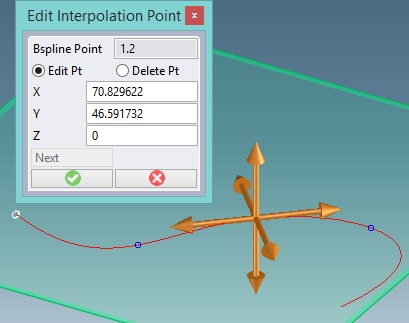
Similiar to the edit point dialog, edit the coordinate value directly, or use
the 3D Copilot to move the desired point. By default, the directions of
the 3D Copilot are aligned to the tangent, normal and perpendicular directions of
the spline at the selected interpolation point. To modify the default 3D
Copilot directions, pick on any other entity to use as a reference for the
desired translations or rorations. It is also possible to delete the
selected interpolation point as well. To insert an interpolation point on
an existing spline segment, just click on a new point on the spline and it will
be created as a new interpolation point on the curve.
Deleting Points
A point can be deleted by selecting it in the point table and then clicking delete. All points can be deleted at once by clicking on Clear on the points table. Alternatively, you can also delete a point within the edit point dialog as well.
Point Offsets
Use the Point Offset option to create a path that is offset from the points you select.
A point can be offset from its location by a 3d vector. To offset a point select the point in the point table and then entering a X,Y,Z vector in the Offset By data field. This value can also be entered before defining a new point. If the "Auto Clr" flag is set, then the offset will be cleared after each pick point. If the "Auto Clr" flag is not set, then the offset will not be cleared until the "Clear Offset" button is selected. The location of the point will be modified in the point table to show its new location. Offsetting a point is also available on the Edit Points menu.
It is also possible to define the offset by referencing geometry. Instead of entering a value in the Offset data field click on the Offset button. Using the 3D copilot capabilities, select any type of reference entity you want to use as your offset direction, then enter or drag the value to the desisred offset amount. This choice is also available on the Edit Points menu.
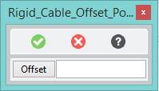
Choosing a component
Additional components can
be placed along the length of the cable. These may include items such as
wire ties, clips, labels,… To add, edit or
delete components, select the Components button in the Additional parameters
and the following table will be displayed.
This table will display a
list of all components placed on the current cable. The order in which
the components are listed is of no particular importance. It simply
conveys the order in which they were defined. Initially, this table will
be blank until a component is added. Selecting the add button will add a new
component to the cable. If you select on a component
within this table, the edit and delete options will be enabled.
You can delete multiple components by highlighting multiple rows in this
table. Adding or editing a component will display the following edit
component dialog.
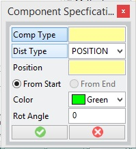
Comp Type – select the type of
component you wish to add or edit. The Cable Components table will be
displayed and show all allowable types for the cable you are building.
Dist Type –
Specifies how the placement of component should be determined. There are
three choices; Position (default), Distance and Percentage. If Position is
selected, you'll be prompted to pick a location on the cable path where you wan
the component placed. If Distance is selected, then you can specify the
distance from one of the ends (the start or end side) of the cable where the
component should be placed. If Percentage is selected, then the position
will be determined by the specified percentage (value between 0 and 100) from
the specified end of the cable. For example, if you want the component to
be placed in the middle of the cable length, specify a percentage of 50.
Once the distance has been entered, a feedback point will be displayed on the
cable where the component will be placed. It is an error to specify a
location that would not lie on the cable.
From Start, From End
– Specifies which end of the cable the distance or percentage is to be
calculated from. If you desire the component to be placed 10 units from
the end of the cable, then use the From End option.
Color – Determines
the color of the component to be placed on the cable.
Rot Angle –
Specifies the amount the component should be rotated about the cable axis when
placed on the cable.
Once the specification is done for the component, select the OK check mark and a feedback label will be placed on the cable feedback model showing where the component will be placed and the color it will be built with. The actual component will not be shown until the Build Cable button is selected. At any time, you can change the parameters of the component by using the Edit button in the Cable Comps table shown above. During modification of the cable, the position of the cable components will be maintained according to the specificaitons provided. In other words, components may move from segment to segment depending on the changes made to the cable.
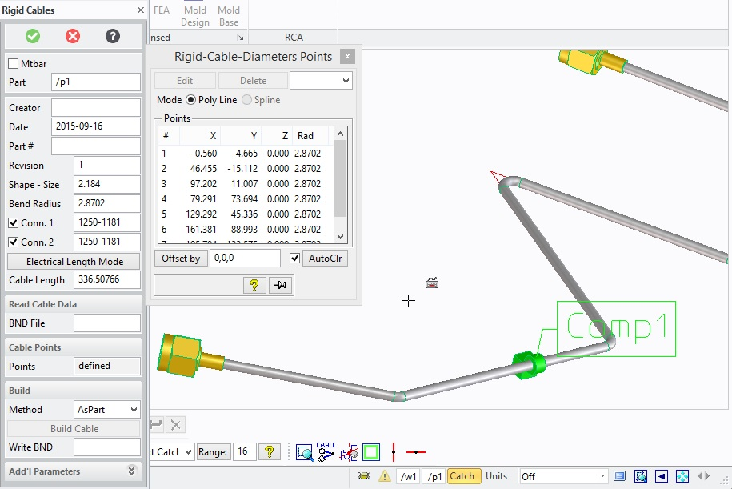
Using Mtbar Mode
When
set, Mtbar mode enables the mini-toolbar to be active. While the
mini-toolbar is active, the cable modeling UI is hidden by default and all
interaction with the cable (creating or modifying) occurs via the mini-toolbar
which is context sensetive. Each time a user pick occurs, the system
evaluates the pick and displays the appropriate mini-toolbar options to
determine which action the user desires to perform. If the user
click occurs at a new point, the point will be added to the end of the cable.
If the user click occurs anywhere on the existing path, the mini-toolbar
with the options that make sense for the user click are displayed. For
example, if the user clicks on the first point in the cable, the following
mini-toolbar will be displayed:
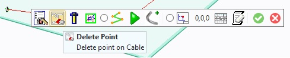
The above mini-toolbar contains a list of options available when selecting on
the first point in a cable path. Hovering the mouse over any of the icons
will display both the action associated with the icon along with a brief one
line description of that action. In the above example, the following
icons/actions are available:
Edit the Point, Delete the Point, Modify/Set the connector, Modify the shape,
Toggle between Polyline Mode and Spline Mode, show the UI for the complete
dialog, Build the Cable, Specify an offset fo the next point pick,
display the points table, and Clear the points. Listed below are all
available icons which may be displayed depending on the location and type of
cable being operated on
|
|
Set
points mode on |
|
|
Edit
the point |
|
|
Delete
the point |
|
|
Move
a path segment |
|
|
Delete
a segment |
|
|
Insert
a point into the path |
|
|
Insert
an interpolation point into a bspline segment |
|
|
Move
interpolation point of a bspline segment |
|
|
Delete
interpolation point of a bspline segment |
|
|
Change
bend radius |
|
Move |
Move
multiple points |
|
|
Modify
selected connector data |
|
|
Edit
component information |
|
|
Delete
selected component |
|
|
Add
component to cable path |
|
|
Change
or edit the cable shape |
|
|
switch/set
poly line mode |
|
|
swtich/set
to spline mode |
|
|
Show
Cable Dialog UI |
|
|
Build
Cable |
|
|
Set
Point offset value |
|
|
Toggle
display of points table |
|
|
Clear
points table |
Importing a Curve
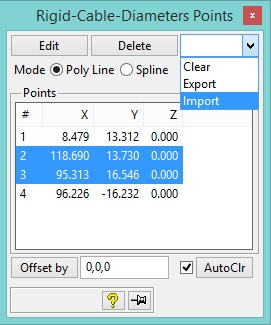
To build more complex cables or to use existing curves generated outside of
Cable Modeling, use the import curve functionality. In the points table,
highlight zero or more points and select the Import option.
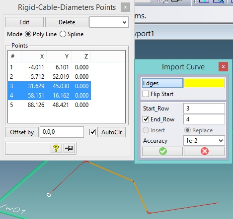
This will display the above Import Curve Dialog, and highlight the
corresponding elements on the path which will be impacted by the import
command. Using the import curve dialog, set or modify the following
values:
Edges - Select one or more
contigous edges from any object within Modeling. Typically, a wire part,
but could be any 3D edge on any part. The selected edges will be imported
into the cable path at the specified location.
Flip Start - Use this option to flip the orientation of the selected
edges to import.
Start Row - Enter the row where the imported curve will be inserted.
If no End Row is specified, then the imported curve will be inserted
before this point.
End Row - Enter the row where the imported curve will be replaced up to.
If not specified or if the same as the Start Row, the Insert/Replace
option will be enabled to determine if the imported curve should be inserted
before the given row or replace the existing curve terminated by the given row.
Insert/Replace - This mode is only enabled when the start row and end
row have the same values (or no end row is specified). Determines if the
imported curve should be inserted before the given row or if the imported curve
should replace the path segment terminated by the given row. In the
special case condition where the start row is the last point in the cable path,
then the Insert mode will be replaced by the Append mode. This allows the
imported curve to be appended to the end of the cable path.
Accuracy - When importing a curve that consists of one or more splines,
this determines the accuracy to which the interpolation spline will be used to
approximate the imported curve. The higher the accuracy, the greater
number of interpolation points will be required to approximate the imported
curve. The total number of interpolation points required to meet the
specified accuracy will be shown when importing complex curves (spirals,
helixes, ellipses, bsplines and all other complex curve types). The
higher the number of interpolation points, the more complex the cable will
become. It is suggested to use a reasonable accuracy value to keep the
number of interpolation points reasonable.
NOTES:
Once the imported curves have been selected, a preview of the new path will be
shown. Verify the preview will produce a valid path. If overlapping
or crossing segments occur, modify the parameters as required to ensure a valid
path can be produced. An error message will be displayed if conditions
exist that can not be overcome. In addition, the preview will also check
if any rule violations have occured and display a corresponding message.
If the selected curves to import do not share a common point with the specified
start (or end row), a polyline will be used to connect the imported curve to
the existing path when required.
Exporting a Curve
Any set of segments in the cable path can be exported to a
wire part. Use the Export option in the points table to initiate the
Export Curve functionality.
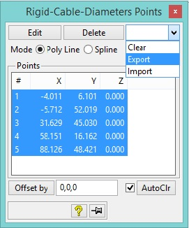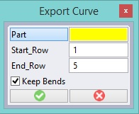
Highlight zero or more rows in the points table and select the Export option.
Part - Select an empty part or an existing wire part where the exported
curve(s) will be placed.
Start Row - Select the row where the export should begin.
End Row - Select the row where the exported curve should end.
Keep Blends - Determines whether the exported curve will include the
bends between each segment. If Keep Blends is not selected, then the
exported curve will be created as if the bend radius had been set to zero.
Merging Curves
Any
set of segments in the cable path can be merged into a single spline segment
(provided the shape allows the use of splines within the path). Use the
Merge option in the points table to initiate the Merge Curve functionality.
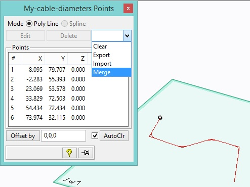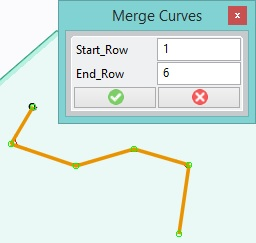
Highlight zero or more rows in the points table and select the merge option.
If no rows are highlighted, all rows by default will be included.
Start Row - Select the row where the merge should begin.
End Row - Select the row where the merged curve should end.
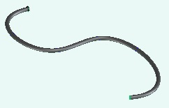
All segments included within the specified rows (as shown by highlighted
segments) will be merged into a single spline segment. The selected
segments may be of any type. For example, it two adjacent spline segments
are selected, they'll be merged into a single spline segment.